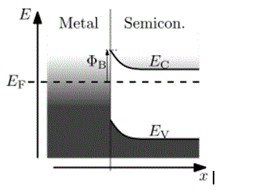

Schottky junction is a common term in electronic circuit, in fact the operation of Schottky diodes are based on this concept. In electronics circuits, the word junction means metal or semiconductor junction, where two types of substances are connected with each other. A Schottky junction is actually a metal semiconductor junction, or in other words it is a contact point (or surface) where the metals and semiconductors are joined with each other. The rectifier type metal semiconductor junction is termed as Schottky junction. The basic construction of Schottky diode is actually a combination of metal and semiconductor, where the electrons formed in a potential barrier which is called Schottky barrier.

The above picture shows the characteristics of Schottky junction. Ef is the Fermi energy level. Like other conventional diodes, the Schottky diodes also connected in forward bias mode, which means the p zone of the diode is connected with the positive terminal of the source. In forward bias mode, many electrons pass through this Schottky barrier through the Schottky junction. But in reverse bias some excited electrons pass through this Schottky junction. The best conductivity option is gained in forward bias mode, therefore Schottky diodes are generally connected in the forward bias with the source circuit.
 by
by